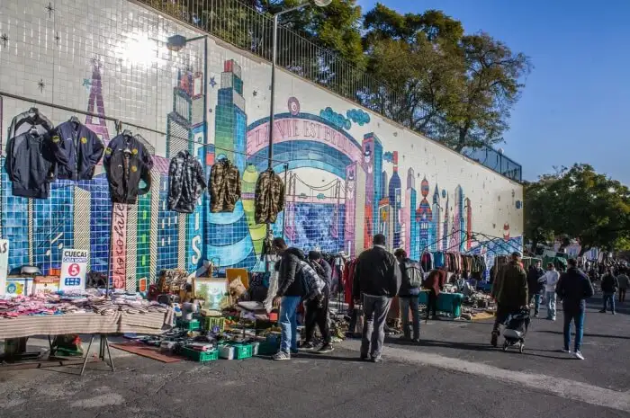

4.Feire Da Ladra
What can be a cheap place to shop than a flea market and Lisbon's Feira da Ladra is one of the capital city’s best-kept secrets. Vibrant and colorful, the name Feira da Ladra, literally translates to "Thieves' Market", Ladra meaning woman thief. But, don’t you fear…this is just another name. Ladro also means antique and that is what you will find in plenty here. You will also find a lot of clothes, books, hand-made goods, home décor, coins, and even military objects. The market is held every Tuesday and Saturday, from dawn to the early afternoon.